금속재료산업기사 (2003-03-16 기출문제)
1과목: 금속재료
1. Bravais 격자 모형에서 입방정계의 격자상수 a, b, c와 축각 α, β, γ를 옳게 나타낸 것은?
- a=b=c, α=β=γ=90°
- a=b≠ c, α=β=γ=90°
- a≠b≠c, α=β=γ=90°
- a≠b≠c, α≠β≠γ≠90°
(정답률: 82%)

2. 합금의 용융 응고 온도범위(온도차가 생기는 것)를 가장 바르게 설명한 것은?
- 항상 일정하다.
- 조성에 따라 달라진다.
- 무게변화에 따라 달라진다.
- 부피변화에 따라 달라진다.
(정답률: 79%)
3. 강(steel)에 함유되어 있는 5대 성분은?
- C, Si, P, Mn, S
- C, Si, Co, Mo, S
- C, P, Al , Cu, S
- C, Mn, Al , Cu, S
(정답률: 78%)
4. 아공석강에서 펄라이트양이 증가하면서 감소되는 기계적 성질은?
- 인장강도
- 연신율
- 경도
- 항장력
(정답률: 58%)
5. 황동의 종류가 아닌 것은?
- 톰벡(Tombac)
- 하스텔로이 에이(Hastelloy A)
- 문쯔 메탈(Muntz Metal)
- 길딩 메탈(Gilding Metal)
(정답률: 69%)
6. 미세한 입자의 요업재료로 제조되며 가볍고 내마모성, 내화학성이 우수하여 자동차 엔진의 사용에 가장 적합한 재료는?
- 파인세라믹스
- 코비탈륨
- 알드레이
- 고온강화형합금강
(정답률: 36%)
7. Al 또는 그 합금의 성질에 관한 설명이 옳지 못한 것은?
- 비중과 용융온도가 약 2.7, 660℃ 이다.
- 은백색의 가볍고 전연성이 있는 금속이다.
- 내식성이 좋고 전기및 열의 전도성이 좋은 금속이다.
- 물과 대기 중에서 내식성이 나쁘고 염산, 황산, 알칼리 등에는 잘 견딘다.
(정답률: 76%)
8. Ni 35∼36%, C 0.1∼0.3% , Mn 0.4% 와 Fe 합금으로 열팽창 계수가 0.9 × 10-6(20℃에서)이며 내식성도 크고, 바이메탈, 시계진자, 줄자, 계측기 부품 등에 사용하는 불변강은?
- 인바(invar)
- 엘린바(elinvar)
- 코엘린바(coelinvar)
- 플리티나이트(platinite)
(정답률: 67%)
9. 초경합금의 특성이 아닌 것은?
- 경도가 높다.
- 고온에서 변형이 적다.
- 내마모성과 압축강도가 높다.
- 고온경도 및 강도가 낮다.
(정답률: 73%)
10. 어떤 온도에서 가소성을 가진 성질을 나타내는 플라스틱을 무엇이라고 하는가?
- 탄화규소
- 초탄성재료
- 합성수지
- 알런덤합금
(정답률: 50%)
11. 단조 재료의 표준 단조 온도(℃)로 적당치 않은 것은?
- 두랄루민 : 약 400
- 탄소강 강재 : 약 800
- 모넬메탈: 약 1040
- 알루미늄 : 약 700
(정답률: 48%)
12. 분말야금(powder metallurgy)의 특징이 옳지 않은 것은?
- 절삭공정을 생략할 수 있다.
- 융해법으로는 만들 수 없는 합금을 만들 수 있다.
- 다공질의 금속재료를 만들 수 있다.
- 제조과정에서 융점까지 온도를 올려야 한다.
(정답률: 67%)
13. 대표적인 내마모성 강으로써 Mn 이 약 12 % 함유된 강은?
- 마텐자이트 스테인리스강
- 오스테나이트 스테인리스강
- 하드필드강
- 크롬강
(정답률: 64%)
14. 금속조직의 용어를 설명한 것 중 틀린 것은?
- α 고용체 + Fe3C → 레데뷰라이트
- Fe3C → 시멘타이트
- α 고용체 → 페라이트
- γ 고용체 → 오스테나이트
(정답률: 77%)
15. 주철의 기지조직을 펄라이트로 하고 흑연을 미세화시켜 인장강도를 30kgf/mm2 이상 강화시킨 것으로 내열성, 내마모성이 우수하여 내연기관의 실린더 등에 사용하는 것은?
- 공석주철
- 보통주철
- 고급주철
- 연성주철
(정답률: 65%)
16. 섬유강화 금속의 종류가 아닌 것은?
- LNG
- FRS
- MMC
- FRM
(정답률: 67%)
17. 베어링 합금의 필요조건이 아닌 것은?
- 하중에 견딜 수 있는 정도의 경도와 내압력을 가질것
- 주조성과 절삭성이 좋고 열전도율이 클것
- 마찰계수가 높고 저항력이 작을것
- 내소착성이 크고 인성이 있을것
(정답률: 48%)
18. 서로 관계없는 것끼리 연결된 것은?
- 함석판-Zn도금
- 모넬메탈-열전대
- 청동-에밀레종
- 양철판-Sn도금
(정답률: 39%)
19. 전위(dislocation)의 종류가 아닌 것은?
- 칼날 전위
- 나사 전위
- 단조 전위
- 혼합 전위
(정답률: 63%)
20. 금속의 성질 중 맞는 것은?
- 금속은 고유한 광택을 가지지 않는다.
- 금속은 부도체이다.
- 금속은 온도와 관계없이 모두 고체이다.
- 금속은 연성과 전성이 있다.
(정답률: 56%)
2과목: 금속조직
21. 고용체에서 용질원자의 대소 정도에 따라 결정 격자의 변형이 생길 때 금속의 물리적, 기계적 성질의 변화 설명으로 옳은 것은?
- 전도전자가 산란된다.
- 전기저항이 감소한다.
- 경도가 감소한다.
- 강도가 감소한다.
(정답률: 42%)
22. 순철에서 [α ]↔[γ] (910℃)로 변태하는 점은?
- A1 변태점
- A2 변태점
- A3 변태점
- A4 변태점
(정답률: 60%)
23. 금속결정구조에서 체심입방격자의 배위수는?
- 6 개
- 8 개
- 12 개
- 24 개
(정답률: 69%)
24. 금속의 육방정계의 대표적인 면이 아닌 것은?
- 기저면(base plane)
- 각통면(prismatic plane)
- 주조면(cast plane)
- 각추면(pyramidal plane)
(정답률: 64%)
25. 레데뷰라이트(ledeburite)를 바르게 표기한 것은?
- α -고용체
- γ-고용체＋Fe3C
- δ -고용체
- α -고용체＋γ-고용체
(정답률: 59%)
26. 다음 중 점결함(Point defect)이 아닌 것은?
- 원자 공공
- 격자간 원자
- 전단 전위
- 프렌켈 결함
(정답률: 54%)
27. 가공재료의 내부응력 제거와 조직의 균질화를 목적으로 하는 것은?
- 스트레인
- 오버히팅
- 어닐링
- 하드닝
(정답률: 58%)
28. Fe3C는 어느 것에 속하는가?
- 포정 용해물
- 치환 고용물
- 금속간 화합물
- 공석 혼합물
(정답률: 43%)
29. 냉간가공 하였을 때 물리적,기계적성질의 변화가 맞는 것은?
- 밀도가 증가 한다.
- 전기저항은 증가 한다.
- 연신율은 증가 한다.
- 인장강도가 감소 한다.
(정답률: 58%)
30. 철-탄소계 상태도에서 공석점의 탄소는 약 몇 % 인가?
- 0.55
- 0.65
- 0.80
- 1.2
(정답률: 74%)
31. 규칙격자가 생기면 전기 전도도는?
- 불규칙한 때에 비하여 전기 전도도가 감소한다.
- 불규칙한 때에 비하여 전기 전도도가 증가한다.
- 전도전자의 산란이 많아서 전기 전도도가 커진다.
- 전도전자의 산란이 적어서 전기 전도도가 작아진다.
(정답률: 66%)
32. 탄소 0.2-0.3% 정도의 강에서는 냉각속도에 따라 A3변태에 의하여 초석 α 가 γ결정의 벽개면(cleavage plane)을 따라서 판상으로 석출한다. 이 때 나타나는 주 조직은?
- 오스테나이트
- 시멘타이트
- 비드만스테텐
- 펄라이트
(정답률: 50%)
33. 응력(stress)-변형량(strain) 곡선에서 완전소성체를 나타내는 것은?
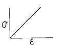
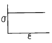
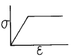
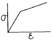
(정답률: 62%)
34. 그림에서 P점 조성 합금중의 A성분의 양은?
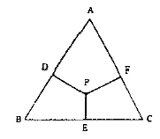
- DP
- DA
- PE
- FC
(정답률: 78%)
35. 넓은 범위의 치환형고용체를 형성하기 위한 합금원소의 구비조건이 틀린 것은?
- 원자크기가 15% 이내이어야 한다.
- 가전자(valence electron)가 같아야 한다.
- 결정구조가 같아야 한다.
- 상호간에 이온 친화도의 차가 커야 한다.
(정답률: 62%)
36. 체심입방격자의 격자상수를 a라 할 때 원자반경은?
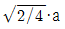
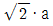
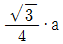
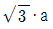
(정답률: 78%)
37. 단범위 규칙도가 0인 것은 어떤 상태를 의미하는가?
- A,B 두원자가 완전 규칙격자를 이룬다.
- A,B 두원자가 금속간 화합물을 이룬다.
- A,B 두원자가 규칙격자와 금속간 화합물을 이룬다.
- A,B 두원자가 무질서한 상태이다.
(정답률: 54%)
38. 순철의 가열시 변태를 바르게 설명한 것은?
- A2에서 강자성체가 상자성체로, A3에서 B.C.C↔F.C.C로 변태한다.
- A1에서 강자성체가 상자성체로, A3에서 F.C.C ↔H.C.P로 변태한다.
- A3에서 상자성체가 강자성체로, A4에서 B.C.C ↔F.C.C로 변태한다.
- A4에서 상자성체가 강자성체로, A3에서 F.C.C ↔H.C.P로 변태한다.
(정답률: 65%)
39. 금속결합(Metallic bond)에 관련된 설명으로 옳은 것은?
- 금속결합은 방향성이 거의 없다.
- 금속내에서 전자가 자유롭게 이동 하지 않는다.
- 금속원자는 불안정한 구조를 이루도록 결합한다.
- 배위 수가 낮고 비결정체이다.
(정답률: 48%)
40. 금속의 FCC 에서 Slip 면과 방향이 맞는 것은?
- {100} <0001>
- {111} <110>
- {111} <0001>
- {101} <1120>
(정답률: 63%)
3과목: 금속열처리
41. 철강 중에 극히 미량으로 첨가하여도 담금질성을 최대로 증가 시키는 원소는?
- 망간
- 알루미늄
- 몰리브덴
- 붕소
(정답률: 70%)
42. 침탄 및 확산에 총 6시간이 소요되었다. Harris 방정식에 의한 침탄소요시간(h)은 약 얼마인가? (단, 목표표면 탄소농도 : 0.75%, 침탄시 탄소농도 : 1.2%, 소재자체 탄소농도 : 0.15%)
- 0.95
- 1.5
- 1.96
- 3.4
(정답률: 48%)
43. 인상담금질(Time Quenching)에서 인상시기를 가장 바르게 설명한 것은?
- 가열물의 직경 또는 두께 10mm당 1초 동안 수냉한 후 유냉 또는 공냉한다.
- 화색(火色)이 나타나지 않을 때까지의 7배 시간 만큼 수냉한 후 공냉한다.
- 기름의 기포발생이 정지했을 때 꺼내어 공냉한다.
- 가열물의 직경 또는 두께 20mm당 1초 동안 유냉한 후 공냉한다.
(정답률: 50%)
44. 열처리를 하는 목적 중 맞지 않는 것은?
- 조직을 안정화시키기 위하여
- 재료의 경도 및 인성을 부여하기 위하여
- 내식성을 개선하기 위하여
- 조직을 조대화하고 방향성을 크게하기 위하여
(정답률: 60%)
45. 서로 다른 두 종류의 금속선 양쪽 끝부분을 접합하여 그 접합점으로부터 온도차가 생기면 열기전력을 발생시키는 데 이것을 이용하여 측정하는 온도계는?
- 복사고온계
- 열전온도계
- 전기저항 온도계
- 광전온도계
(정답률: 67%)
46. 침탄깊이와 관련이 가장 적은 것은?
- 침탄제의 종류
- 가열온도
- 가열로의 종류
- 유지시간
(정답률: 80%)
47. 고주파 담금질시 경도 부족 및 균열 발생의 대책이 아닌것은?
- 탄소 함유량을 0.3% 이하로 유지한다.
- 적정한 분무 냉각 조치를 한다.
- 유도 가열기의 전력을 안정 유지시킨다.
- 담금질 전 펄라이트 변태를 유도한다.
(정답률: 48%)
48. 18Cr-8Ni 스테인리스강을 가열할 때 500~900℃의 온도 부근에서 급냉하지 않을 시 주로 나타나는 현상은?
- 적열취성
- 청열취성
- 결정립의 조대화
- 입계부식
(정답률: 34%)
49. 열처리 소재를 담금질 액에 넣는 방법으로 가장 옳은 것은?
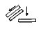
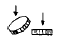
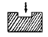
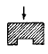
(정답률: 65%)
50. 전기로 구조 재료장치와 관계 없는 것은?
- 단열내화물
- 발열체의 지지
- 피열물의 지지
- 로울링의 종류
(정답률: 40%)
51. 주조용 알루미늄 합금의 열처리 방법 중 T6(α -실루민)의 담금질 온도로 가장 적당한 것은?
- 50∼70℃
- 100∼120℃
- 255∼270℃
- 525∼540℃
(정답률: 44%)
52. 화염경화처리의 일반적인 특징이 아닌 것은?
- 부품의 크기나 형상에 제한이 없다.
- 국부적인 담금질이 가능하다.
- 가열온도의 조절이 용이하다.
- 담금질 변형이 적다.
(정답률: 38%)
53. 구상흑연주철에서 연화 풀림시 백선화 작용을 하는 주 원소는?
- S
- Mg
- Co
- Pb
(정답률: 42%)
54. 담금질한 부품의 표면 경도에 불균일이 생길 때의 방지 대책으로 잘못된 것은?
- 탈탄부를 기계적으로 제거 후 담금질한다.
- 적정한 담금질 온도를 유지한다.
- 냉각은 교반없이 하고 될수록 천천히 한다.
- 담금질성과 냉각능을 감안하여 재료를 고른다.
(정답률: 66%)
55. 강의 마텐자이트조직이 경도가 큰 이유가 될 수 없는 것은?
- 결정의 미세화
- 급냉으로 인한 내부응력
- 탄소원자에 의한 Fe격자의 강화
- 확산 변태에 의한 시멘타이트의 분리
(정답률: 70%)
56. 열처리 전,후처리에 사용되는 설비 중 강 또는 철의 작은 입자(ø 0.7~0.9)를 고속으로 금속표면에 쏘아 때려 깨끗하게 하는 것은?
- 버프 연마
- 쇼트 피닝
- 배럴 다듬질
- 샌드 브라스트
(정답률: 62%)
57. 황동이 제품의 내부응력을 제거하고 시기균열을 방지하기 위한 어닐링처리의 가장 적당한 온도는?
- 300℃
- 100℃
- 50℃
- 10℃
(정답률: 64%)
58. 공구강(고속도강, 열간공구강 등)은 뜨임처리를 하면 뜨임온도 증가와 함께 경도가 저하하다가 어느 뜨임온도 범위에서 역으로 경도가 증가하는 현상을 나타내는 것은?
- 1차 경화 현상
- 2차 경화 현상
- 3차 경화 현상
- 4차 경화 현상
(정답률: 73%)
59. 얇고 긴 강의 제품을 담금질할 때 수냉을 하기 위한 방법을 설명한 것 중 맞지 않는 것은?
- 교반장치가 필요하다.
- 수냉을 할 때 좌우로 강하게 흔들어 준다.
- 수냉의 경우는 물의 온도가 약 30℃ 이하로 유지해야 한다.
- 냉각능력을 적게하기 위해서는 물의 온도를 높게 한다.
(정답률: 64%)
60. 구상흑연주철의 접종제로 사용되지 않는 것은?
- S
- Ce
- Mg
- Ca
(정답률: 69%)
4과목: 재료시험
61. 정전기 발생을 억제하는 대책에 해당되지 않는 것은?
- 주위상대습도를 올려 표면저항을 감소 시킨다.
- 대전 방지제를 도포한다.
- 물질 자체에 도전성 물체를 혼합한다.
- 대전할 염려가 있는 도체부를 접지한다.
(정답률: 65%)
62. 초음파탐상 시험의 설명 중 틀린 것은?
- 탐촉자를 사용한다.
- 표면검사에 효과적이다.
- 펄스 반사법이 있다.
- 투과법이 있다.
(정답률: 67%)
63. 탄소강,저합금강에서 펄라이트의 식별을 위한 부식제는?
- 피크린산 알콜 용액
- 황산, 초산용액
- 주석산용액
- 수산화나트륨액
(정답률: 63%)
64. 피로시험에 사용되는 것 중 거듭 굽히기식 피로시험기가 아닌 것은?
- ONO식
- 아이죠드식
- 전자진공식
- 센크식
(정답률: 62%)
65. 전단 시험에 활용되지 않는 것은?
- 강성률
- 스크래치
- 압축형 전단장치
- 굽힘 모멘트
(정답률: 79%)
66. 0.2%의 영구변형을 일으킬 때의 하중을 평행부의 원단면적으로 나눈값은?
- 압축강도
- 항복강도
- 시효강도
- 회절강도
(정답률: 43%)
67. 미소경도시험을 적용하는 경우가 아닌 것은?
- 시험편이 작고 경도가 높은 부분의 측정
- 도금층 등의 측정
- 절삭공구의 날부위 경도 측정
- 주철품의 내부면 측정
(정답률: 78%)
68. 금속재료의 그라인더 불꽃시험의 목적으로 가장 적당한 것은?
- 소재의 단단한 정도를 알기 위함이다.
- 불꽃놀이용 폭약가루 소재 준비를 위함이다.
- 소재의 재질을 개략적으로 알기 위함이다.
- 그라인더의 사용 수명평가를 위함이다.
(정답률: 65%)
69. 비파괴검사법에 속하지 않는 것은?
- 크리프 시험
- 방사선 투과 시험
- 초음파 탐상 시험
- 자기 탐상 시험
(정답률: 62%)
70. 만능재료시험기가 갖추어야 할 조건이 아닌 것은?
- 정밀도 및 감도가 우수할 것
- 시험기의 안정성이 있을 것
- 조작이 간편하고 정밀측정이 가능할 것
- 시험기의 내구성이 적을 것
(정답률: 60%)
71. 회전굽힘형 피로시험에서 주의해야 할 사항 중 틀린것은?
- 시험편을 정확하게 고정시켜 편심에 의한 진동을 방지한다.
- 시험편이 부식되거나 표면부에 흠이 생기지 않도록 한다.
- 시험편이 회전하기 전에 굽힘하중을 가한다.
- 회전수 적산계와 전동모터의 이상유무를 점검한다.
(정답률: 74%)
72. 설퍼프린트(sulfur print)에 의한 주상편석을 표시하는 기호는?
- Sc
- Sco
- Sn
- SI
(정답률: 35%)
73. 재료의 연성을 알기위한 것으로 구리판, 알루미늄판 및 기타 연성판재를 가압 성형하여 변형능력을 시험하는 것은?
- 에릭슨 시험
- 슬라이딩 마모시험
- 응력파단시험
- 굽힘시험
(정답률: 53%)
74. 비파괴검사법 중 침투탐상법에서 일반적으로 감도시험에 사용되는 시험편의 재질은?
- 구리
- 알루미늄
- 주철
- 플라스틱
(정답률: 56%)
75. 충격시험용 시험편의 노치의 형상이 아닌 것은?
- 프레몬트식
- 샤르피식
- 매스나거식
- 크라이시식
(정답률: 42%)
76. 와류 탐상 시험의 장점을 설명한 것 중 가장 옳은 것은?
- 형상에 관계없이 전부 적용할 수 있다.
- 시험결과의 흠 지시로부터 직접 흠의 종류를 판별할 수 있다.
- 표면에서 깊은 위치의 흠 검출도 가능하다.
- 비접촉으로 시험할 수 있다.
(정답률: 50%)
77. 마모시험(wear test) 방법이 아닌 것은?
- 전단 마모
- 슬라이딩 마모
- 회전 마모
- 왕복슬라이딩 마모
(정답률: 65%)
78. 모스경도(Mohs hardness)의 경도수가 가장 낮은 것은?
- 금강석
- 석영
- 형석
- 정장석
(정답률: 32%)
79. 피로시험에 대한 설명으로 옳은 것은?
- 피로파괴는 파괴부분의 외형에 많은 변형을 일으킨 후 파괴된다.
- 피로시험은 정적인 시험방법이다.
- 피로시험의 결과는 인장-변형곡선(T-S곡선)으로 나타낸다.
- 피로시험의 결과는 응력-싸이클 수 곡선(S-N곡선)으로 나타낸다.
(정답률: 46%)
80. 임의의 원소에 대한 격자간 거리와 구조를 결정하기 위한 시험은?
- X-선 회절법
- Stress 도장법
- Fringe 상수법
- Double 굴절법
(정답률: 75%)